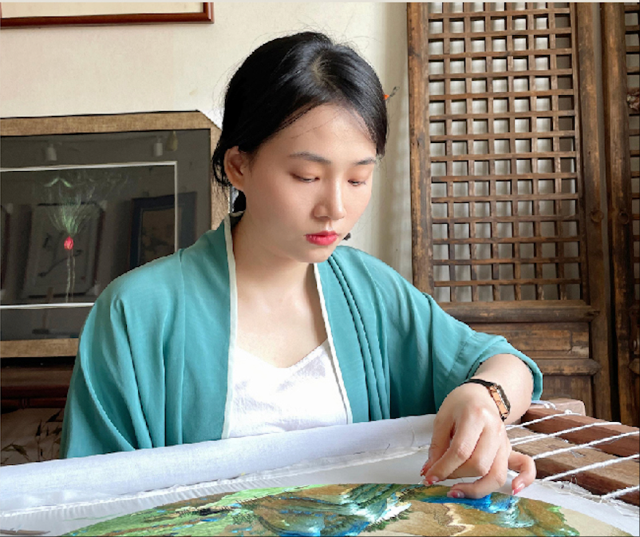
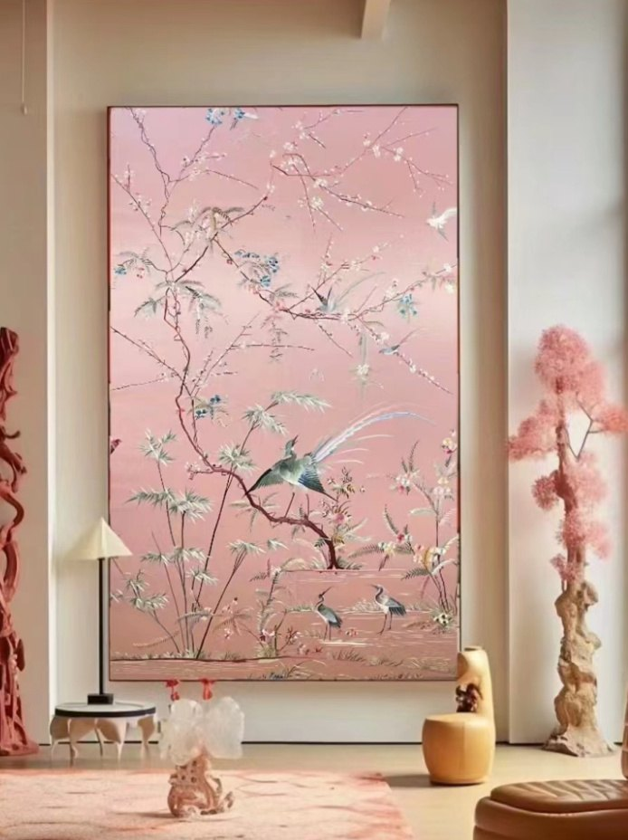
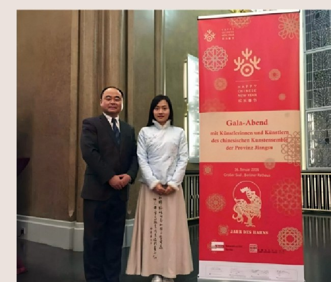
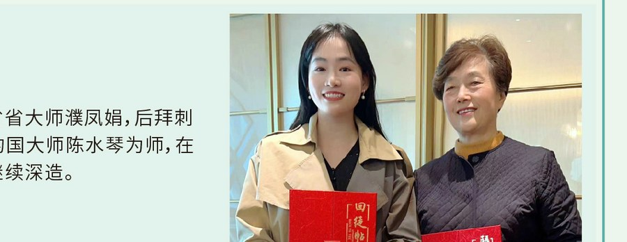
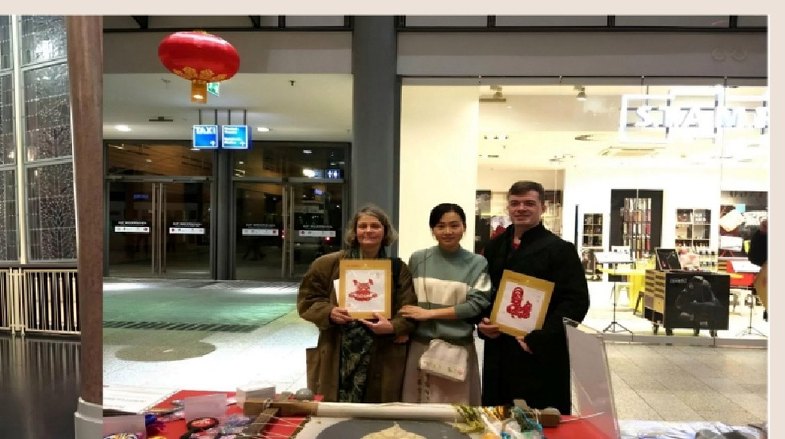

Artist Profile
杨雪，以绣为生，以绣为乐。
杨雪是高级工艺美术师、青年刺绣手艺人、刺绣非遗传承人。她从苏州镇湖的细密针脚出发，持续探索传统技艺在当代审美中的表达方式。
从国际文化交流、品牌合作到高端空间定制，她的创作既保留苏绣的精微，也强调作品进入真实生活后的气质、比例与情绪。
认识杨雪
Atelier Positioning
查看定制体系
精品收藏级苏绣，私人定制。
杨雪刺绣艺术以“中国·苏绣”为根，以纯手工技艺回应当代审美，让传统单品再次发光发热，也让丝织技艺走进真实生活。
网站围绕作品展示、艺术履历与定制咨询展开，让访客先看见作品质感，再理解杨雪的技艺背景与服务方式。
400万+
互联网手工艺达人全网关注
1万+
婚书与人像等定制服务沉淀

Public Presence
履历为证，作品为主。
履历资料不再做密集拼图，也不把低像素照片硬撑成主视觉。页面以作品和真实现场为核心，活动与师承作为背景信息辅助说明。



Selected Works
作品不是装饰，是空间里被看见的时间。
以美术馆式的留白和作品陈列组织页面，让访客第一眼看到真实作品、真实场景和可定制方向。
Custom Service
从一面墙、一场婚礼，到一份家族礼物。
比参考站更清晰地呈现服务转化：用户可以直接理解定制类型、沟通路径和预约入口，而不是只停留在展示。
Process
定制流程清楚，艺术判断更从容。
高端艺术网站不仅要好看，也要让客户知道下一步怎么走。流程越清楚，咨询越轻松。
01
需求沟通
确认题材、用途、预算、空间照片或人物素材。
02
方案设计
输出尺寸、构图、色彩、装裱和交付周期建议。
03
手工创作
按确认方案进行刺绣创作，关键节点同步进度。
04
装裱交付
完成装裱、包装与交付，必要时提供陈设建议。
News & Studio
让作品、经历与工作室现场一起说话。
参考站有“美术馆花絮”，这里改为更适合个人艺术家的动态区，把作品、合作、体验活动放在同一条品牌叙事里。
想为一个空间或重要时刻，定制一件刺绣作品？
可提供苏州、杭州两地咨询与预约服务，也可先通过电话或邮件说明需求。